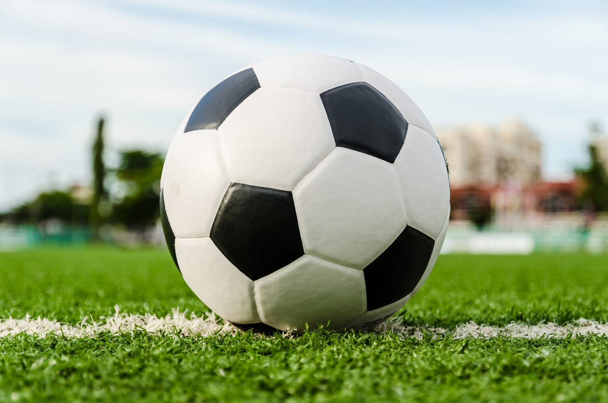

ЦСКА-Краснодар: 29 октября 2023 года

ЦСКА (Москва)
- Главный тренер - Владимир Федотов (Россия)
- Год основания: 1911
- Достижения: обладатель Кубка УЕФА, 7-кратный чемпион СССР, 5-кратный обладатель Кубка СССР, 6-кратный чемпион России, 8-кратный обладатель Кубка России и 7-кратный обладатель Суперкубка России
- Место в турнирной таблице в текущем чемпионате: 6 (17 очков после 11 туров (всего 30 туров))
Краснодар (Краснодар)
- Главный тренер - Владимир Ивич (Сербия)
- Год основания: 2008
- Достижения: финалист Кубка России в сезонах 2013/14 и 2022/23, трёхкратный бронзовый призёр чемпионата России
- Место в турнирной таблице в текущем чемпионате: 1 (27 очков после 11 туров)
Статистика личных встреч:
В чемпионате России: +9=9-6
На поле ЦСКА в чемпионате России: +7=4-1
Во всех турнирах: +11=11-9-6
Во всех турнирах на поле ЦСКА: +9=5-2
ЦСКА-Краснодар, превью и прогноз от Максона
- После перерыва на игры сборные команды возобновляют чемпионат.
- По личным встречам есть перевес на стороне хозяев.
- Кубанцы идут на первом месте, что немаловажно, мало пропускают (5 мячей всего за 11 туров).
- Не стоит забывать, что есть у Краснодара реваншистские настроения после поражения в финале Кубка России в прошлом сезоне.
Прогноз от Максона: ничья 1:1 или 0:0.
Еще прогнозы

Анализируй, сопоставляй, сравнивай свой прогноз с прогнозом экспертов